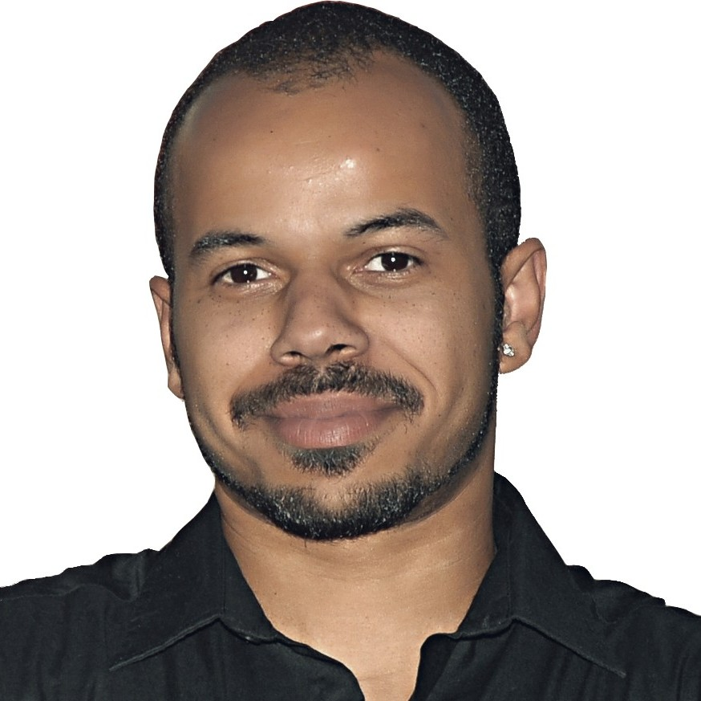

Mal Alatete
Full Stack Developer
An enthusiastic and driven professional with a 20-year background in
sales, project management, and technical documentation, transitioning into
full-stack web and app development. Leveraging a unique blend of
experience in B2B and B2C environments, including technical project work
in fiber optic infrastructure, I am adept at problem-solving, client
communication, and managing complex projects from conception to
completion. I am now applying these skills to build dynamic and
user-centric applications using modern web technologies. I am a quick and
dedicated learner, eager to contribute to a collaborative development
team.
Experience
Technische Leitung
2021 - 2024: Abteilung für kaputte Kaffeemaschinen
-
Aufgaben: Entwicklung und Fehlerbehebung an komplexen,
defekten Kaffeezubereitungsanlagen. Entwicklung von logischen Abläufen
zur Optimierung der Kaffeequalität.
-
Erfolge: Steigerung der Kaffeespenden an die
Mitarbeiter um 30 % durch die Entwicklung neuer "Debug"-Methoden.
Reduzierung der Ausfallzeiten von Kaffeemaschinen um 50 % durch
proaktive Wartungsstrategien.
Chef-Animateur
2016 - 2021: AIDA Kreuzfahrtsschiffservice - SCOPE: Bingo
-
Aufgaben: Entwurf und Gestaltung einer interaktiven
Benutzeroberfläche (Bingo-Tafel) in Echtzeit für die Unterhaltung von
bis zu 300 Passagieren. Koordination komplexer Zahlenlogik (Backend) mit
dem visuellen Frontend. Analyse von Spieler-Feedback zur ständigen
Verbesserung der Unterhaltungs-Experience.
-
Erfolge: Entwicklung einer "Gamification"-Strategie,
die die Teilnahme am Bingo um 40 % erhöhte. Erfolgreiche Verwaltung des
komplexen Datenflusses von Hunderten von Zahlen und Spielern in einer
chaotischen Umgebung.
Social-Media-Manager
2010 - 2016: Main Focus: Katzenvideos
-
Aufgaben: Erstellung und Verwaltung von digitalem
Content für eine sehr spezifische Zielgruppe (Katzenliebhaber).
Datenanalyse des Nutzerverhaltens zur Maximierung der Interaktionsraten
(Likes, Shares). Entwicklung eines Frontends, das Katzen dazu animiert,
vor der Kamera zu agieren.
-
Erfolge: Steigerung der Follower-Zahlen auf den
Plattformen um 200 % innerhalb von sechs Monaten. Entwicklung eines
Algorithmus, der vorhersagte, welche Katzeninhalte am wahrscheinlichsten
viral gehen würden, was zu einer Engagement-Rate von 15 % führte.
Education
-
Master of Full-Stack-Magic (M.F.S.M.), 2020
Hogwarts School of Codecraft and Wizardry, Vereinigtes Königreich
Spezialisierung in „Transfiguration von Datenbanken“ und
„Tränke-Brauen für skalierbare APIs“. Abschlussprojekt: Entwicklung
des „Mischief Managed CMS“, das sich von selbst löscht, wenn es von
der falschen Person verwendet wird.
-
Certified Legacy Code Exorcist (C.L.C.E.), 2018
Schule zur Entdämonisierung von Legacy-Code, Transsilvanien
Intensivkurs zur Rettung alter Systeme, die mehr spucken als laufen.
Praktikum bei der Sanierung des ersten „Java-Applets“, das seit den
90er-Jahren in einem Keller steckte.
-
Binäres Einmaleins-Zertifikat, 2008
Grundschule zur binären Logik, Bielefeld
Frühes Verständnis für die grundlegende Funktionsweise des Universums
(0 und 1). Projekt: Bau eines LEGO-Roboters, der in der Lage war, „Ja“
oder „Nein“ zu sagen, und sonst nichts.
Skills and Interests